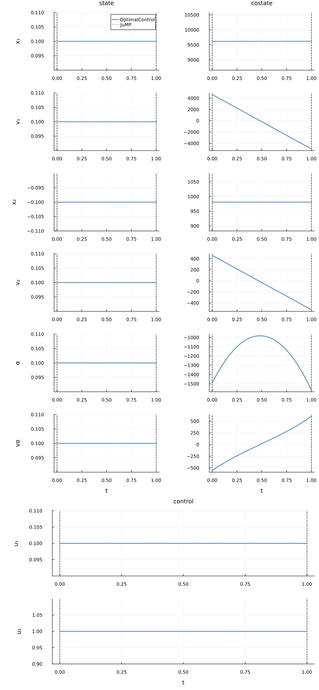
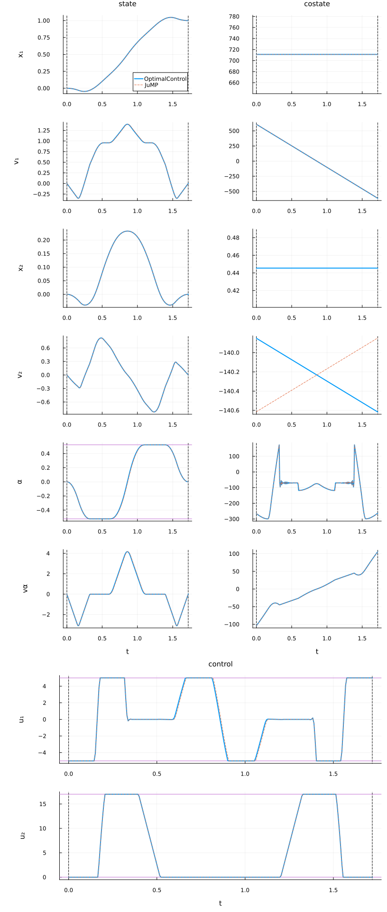

Ducted fan
The ducted fan problem is a classical nonlinear benchmark in optimal control with multiple input and state constraints. It models the planar motion of a ducted fan aircraft, described by its horizontal and vertical positions $(x_1, x_2)$, the angle $\alpha$ with respect to the vertical, and their velocities. The inputs are the body-fixed thrust components $(u_1, u_2)$, generated by moving flaps at the end of the duct.
The objective is to steer the fan from the origin to a horizontal position of $1$ m at altitude $0$, with zero final velocities and attitude, in a free final time $t_f$, while minimizing a trade-off between control effort and transition time.
The optimal control problem reads
\[\min_{x,\,u,\,t_f} \; J = \frac{1}{t_f} \int_0^{t_f} \big( 2u_1(t)^2 + u_2(t)^2 \big) \, dt + \mu \, t_f ,\]
subject to the dynamics
\[\dot{x}_1 = v_1, \qquad \dot{v}_1 = \tfrac{1}{m}\big( u_1 \cos\alpha - u_2 \sin\alpha \big),\]
\[\dot{x}_2 = v_2, \qquad \dot{v}_2 = \tfrac{1}{m}\big( -mg + u_1 \sin\alpha + u_2 \cos\alpha \big),\]
\[\dot{\alpha} = v_\alpha, \qquad \dot{v}_\alpha = \tfrac{r}{J} u_1,\]
with boundary conditions
\[x_1(0)=0, \; v_1(0)=0, \; x_2(0)=0, \; v_2(0)=0, \; \alpha(0)=0, \; v_\alpha(0)=0,\]
\[x_1(t_f)=1, \; v_1(t_f)=0, \; x_2(t_f)=0, \; v_2(t_f)=0, \; \alpha(t_f)=0, \; v_\alpha(t_f)=0,\]
and the constraints
\[-30^\circ \leq \alpha(t) \leq 30^\circ, \qquad -5 \leq u_1(t) \leq 5, \qquad 0 \leq u_2(t) \leq 17,\]
with $m = 2.2$ kg, $J = 0.05$ kg·m², $r = 0.2$ m, $mg=4$ N. The weight $\mu > 0$ balances control effort and transition time.
Qualitative behaviour
- The free end-time formulation yields a time–energy trade-off, governed by $\mu$: large $\mu$ emphasizes short transfer time, small $\mu$ emphasizes reduced input effort.
- The thrust constraints induce saturation, often forcing bang–bang control profiles in $u_1$ and $u_2$.
- The angular bound $|\alpha| \le 30^\circ$ limits maneuverability, shaping feasible trajectories.
- Flatness-based analysis (see Graichen & Petit, 2009) shows that the system is differentially flat, with outputs that allow explicit trajectory design.
Characteristics
- Nonlinear six-dimensional dynamics.
- Free final time.
- Multiple input and state inequality constraints.
- Benchmark for testing constrained nonlinear OCP solvers.
References
- Graichen, K., & Petit, N. (2009). Incorporating a class of constraints into the dynamics of optimal control problems. Optimal Control Applications and Methods. DOI: 10.1002/oca.880
- B. Açıkmeşe, J. M. Carson III, & L. Blackmore (2005). Lossless convexification of nonconvex control bound and pointing constraints of the soft landing optimal control problem. AIAA.
Packages
Import all necessary packages and define DataFrames to store information about the problem and resolution results.
using OptimalControlProblems # to access the Beam model
using OptimalControl # to import the OptimalControl model
using NLPModelsIpopt # to solve the model with Ipopt
import DataFrames: DataFrame # to store data
using NLPModels # to retrieve data from the NLP solution
using Plots # to plot the trajectories
using Plots.PlotMeasures # for leftmargin, bottommargin
using JuMP # to import the JuMP model
using Ipopt # to solve the JuMP model with Ipopt
data_pb = DataFrame( # to store data about the problem
Problem=Symbol[],
Grid_Size=Int[],
Variables=Int[],
Constraints=Int[],
)
data_re = DataFrame( # to store data about the resolutions
Model=Symbol[],
Flag=Any[],
Iterations=Int[],
Objective=Float64[],
)Initial guess
The initial guess (or first iterate) can be visualised by running the solver with max_iter=0. Here is the initial guess.
Click to unfold and see the code for plotting the initial guess.
function plot_initial_guess(problem)
# dimensions
x_vars = metadata[problem][:state_name]
u_vars = metadata[problem][:control_name]
n = length(x_vars) # number of states
m = length(u_vars) # number of controls
# import OptimalControl model
docp = eval(problem)(OptimalControlBackend())
nlp_oc = nlp_model(docp)
# solve
nlp_oc_sol = NLPModelsIpopt.ipopt(nlp_oc; max_iter=0)
# build an optimal control solution
ocp_sol = build_ocp_solution(docp, nlp_oc_sol)
# plot the OptimalControl solution
plt = plot(
ocp_sol;
state_style=(color=1,),
costate_style=(color=1, legend=:none),
control_style=(color=1, legend=:none),
path_style=(color=1, legend=:none),
dual_style=(color=1, legend=:none),
size=(816, 220*(n+m)),
label="OptimalControl",
leftmargin=20mm,
)
for i in 2:n
plot!(plt[i]; legend=:none)
end
# import JuMP model
nlp_jp = eval(problem)(JuMPBackend())
# solve
set_optimizer(nlp_jp, Ipopt.Optimizer)
set_optimizer_attribute(nlp_jp, "max_iter", 0)
optimize!(nlp_jp)
# plot
t = time_grid(problem, nlp_jp) # t0, ..., tN = tf
x = state(problem, nlp_jp) # function of time
u = control(problem, nlp_jp) # function of time
p = costate(problem, nlp_jp) # function of time
for i in 1:n # state
label = i == 1 ? "JuMP" : :none
plot!(plt[i], t, t -> x(t)[i]; color=2, linestyle=:dash, label=label)
end
for i in 1:n # costate
plot!(plt[n+i], t, t -> -p(t)[i]; color=2, linestyle=:dash, label=:none)
end
for i in 1:m # control
plot!(plt[2n+i], t, t -> u(t)[i]; color=2, linestyle=:dash, label=:none)
end
return plt
endplot_initial_guess(:ducted_fan)
Solve the problem
OptimalControl model
Import the OptimalControl model and solve it.
# import DOCP model
docp = ducted_fan(OptimalControlBackend())
# get NLP model
nlp_oc = nlp_model(docp)
# solve
nlp_oc_sol = NLPModelsIpopt.ipopt(
nlp_oc;
print_level=4,
tol=1e-8,
mu_strategy="adaptive",
sb="yes",
)Total number of variables............................: 2009
variables with only lower bounds: 1
variables with lower and upper bounds: 753
variables with only upper bounds: 0
Total number of equality constraints.................: 1512
Total number of inequality constraints...............: 0
inequality constraints with only lower bounds: 0
inequality constraints with lower and upper bounds: 0
inequality constraints with only upper bounds: 0
Number of Iterations....: 99
(scaled) (unscaled)
Objective...............: 1.8318277178172022e+02 1.8318277178172020e+03
Dual infeasibility......: 1.0232216817919064e-10 1.0232216817919064e-09
Constraint violation....: 1.5502044092841061e-12 1.5502044092841061e-12
Variable bound violation: 1.6903329225215202e-07 1.6903329225215202e-07
Complementarity.........: 3.2427085368938911e-11 3.2427085368938908e-10
Overall NLP error.......: 1.0232216817919064e-10 1.0232216817919064e-09
Number of objective function evaluations = 141
Number of objective gradient evaluations = 100
Number of equality constraint evaluations = 141
Number of inequality constraint evaluations = 0
Number of equality constraint Jacobian evaluations = 100
Number of inequality constraint Jacobian evaluations = 0
Number of Lagrangian Hessian evaluations = 99
Total seconds in IPOPT = 2.001
EXIT: Optimal Solution Found.The problem has the following numbers of steps, variables and constraints.
push!(data_pb,
(
Problem=:ducted_fan,
Grid_Size=metadata[:ducted_fan][:N],
Variables=get_nvar(nlp_oc),
Constraints=get_ncon(nlp_oc),
)
)| Row | Problem | Grid_Size | Variables | Constraints |
|---|---|---|---|---|
| Symbol | Int64 | Int64 | Int64 | |
| 1 | ducted_fan | 250 | 2009 | 1512 |
JuMP model
Import the JuMP model and solve it.
# import model
nlp_jp = ducted_fan(JuMPBackend())
# solve
set_optimizer(nlp_jp, Ipopt.Optimizer)
set_optimizer_attribute(nlp_jp, "print_level", 4)
set_optimizer_attribute(nlp_jp, "tol", 1e-8)
set_optimizer_attribute(nlp_jp, "mu_strategy", "adaptive")
set_optimizer_attribute(nlp_jp, "linear_solver", "mumps")
set_optimizer_attribute(nlp_jp, "sb", "yes")
optimize!(nlp_jp)Total number of variables............................: 2009
variables with only lower bounds: 1
variables with lower and upper bounds: 753
variables with only upper bounds: 0
Total number of equality constraints.................: 1512
Total number of inequality constraints...............: 0
inequality constraints with only lower bounds: 0
inequality constraints with lower and upper bounds: 0
inequality constraints with only upper bounds: 0
In iteration 74, 1 Slack too small, adjusting variable bound
Number of Iterations....: 132
(scaled) (unscaled)
Objective...............: 1.8318277178172059e+02 1.8318277178172059e+03
Dual infeasibility......: 5.3624994722500929e-10 5.3624994722500929e-09
Constraint violation....: 7.4419637119405024e-16 7.4419637119405024e-16
Variable bound violation: 1.6903329225215202e-07 1.6903329225215202e-07
Complementarity.........: 2.2578772995141804e-11 2.2578772995141803e-10
Overall NLP error.......: 5.3624994722500929e-10 5.3624994722500929e-09
Number of objective function evaluations = 236
Number of objective gradient evaluations = 133
Number of equality constraint evaluations = 236
Number of inequality constraint evaluations = 0
Number of equality constraint Jacobian evaluations = 133
Number of inequality constraint Jacobian evaluations = 0
Number of Lagrangian Hessian evaluations = 132
Total seconds in IPOPT = 7.843
EXIT: Optimal Solution Found.Numerical comparisons
Let's get the flag, the number of iterations and the objective value from the resolutions.
# from OptimalControl model
push!(data_re,
(
Model=:OptimalControl,
Flag=nlp_oc_sol.status,
Iterations=nlp_oc_sol.iter,
Objective=nlp_oc_sol.objective,
)
)
# from JuMP model
push!(data_re,
(
Model=:JuMP,
Flag=termination_status(nlp_jp),
Iterations=barrier_iterations(nlp_jp),
Objective=objective_value(nlp_jp),
)
)| Row | Model | Flag | Iterations | Objective |
|---|---|---|---|---|
| Symbol | Any | Int64 | Float64 | |
| 1 | OptimalControl | first_order | 99 | 1831.83 |
| 2 | JuMP | LOCALLY_SOLVED | 132 | 1831.83 |
We compare the OptimalControl and JuMP solutions in terms of the number of iterations, the $L^2$-norm of the differences in the state, control, and variable, as well as the objective values. Both absolute and relative errors are reported.
Click to unfold and get the code of the numerical comparison.
function L2_norm(T, X)
# T and X are supposed to be one dimensional
s = 0.0
for i in 1:(length(T) - 1)
s += 0.5 * (X[i]^2 + X[i + 1]^2) * (T[i + 1]-T[i])
end
return √(s)
end
function numerical_comparison(problem, docp, nlp_oc_sol, nlp_jp)
# get relevant data from OptimalControl model
ocp_sol = build_ocp_solution(docp, nlp_oc_sol) # build an ocp solution
t_oc = time_grid(ocp_sol)
x_oc = state(ocp_sol).(t_oc)
u_oc = control(ocp_sol).(t_oc)
v_oc = variable(ocp_sol)
o_oc = objective(ocp_sol)
i_oc = iterations(ocp_sol)
# get relevant data from JuMP model
t_jp = time_grid(problem, nlp_jp)
x_jp = state(problem, nlp_jp).(t_jp)
u_jp = control(problem, nlp_jp).(t_jp)
o_jp = objective(problem, nlp_jp)
v_jp = variable(problem, nlp_jp)
i_jp = iterations(problem, nlp_jp)
x_vars = metadata[problem][:state_name]
u_vars = metadata[problem][:control_name]
v_vars = metadata[problem][:variable_name]
println("┌─ ", string(problem))
println("│")
# number of iterations
println("├─ Number of iterations")
println("│")
println("│ OptimalControl : ", i_oc)
println("│ JuMP : ", i_jp)
println("│")
# state
for i in eachindex(x_vars)
xi_oc = [x_oc[k][i] for k in eachindex(t_oc)]
xi_jp = [x_jp[k][i] for k in eachindex(t_jp)]
L2_oc = L2_norm(t_oc, xi_oc)
L2_jp = L2_norm(t_oc, xi_jp)
L2_ae = L2_norm(t_oc, xi_oc-xi_jp)
L2_re = L2_ae/(0.5*(L2_oc + L2_jp))
println("├─ State $(x_vars[i]) (L2 norm)")
println("│")
#println("│ OptimalControl : ", L2_oc)
#println("│ JuMP : ", L2_jp)
println("│ Absolute error : ", L2_ae)
println("│ Relative error : ", L2_re)
println("│")
end
# control
for i in eachindex(u_vars)
ui_oc = [u_oc[k][i] for k in eachindex(t_oc)]
ui_jp = [u_jp[k][i] for k in eachindex(t_jp)]
L2_oc = L2_norm(t_oc, ui_oc)
L2_jp = L2_norm(t_oc, ui_jp)
L2_ae = L2_norm(t_oc, ui_oc-ui_jp)
L2_re = L2_ae/(0.5*(L2_oc + L2_jp))
println("├─ Control $(u_vars[i]) (L2 norm)")
println("│")
#println("│ OptimalControl : ", L2_oc)
#println("│ JuMP : ", L2_jp)
println("│ Absolute error : ", L2_ae)
println("│ Relative error : ", L2_re)
println("│")
end
# variable
if !isnothing(v_vars)
for i in eachindex(v_vars)
vi_oc = v_oc[i]
vi_jp = v_jp[i]
vi_ae = abs(vi_oc-vi_jp)
vi_re = vi_ae/(0.5*(abs(vi_oc) + abs(vi_jp)))
println("├─ Variable $(v_vars[i])")
println("│")
#println("│ OptimalControl : ", vi_oc)
#println("│ JuMP : ", vi_jp)
println("│ Absolute error : ", vi_ae)
println("│ Relative error : ", vi_re)
println("│")
end
end
# objective
o_ae = abs(o_oc-o_jp)
o_re = o_ae/(0.5*(abs(o_oc) + abs(o_jp)))
println("├─ objective")
println("│")
#println("│ OptimalControl : ", o_oc)
#println("│ JuMP : ", o_jp)
println("│ Absolute error : ", o_ae)
println("│ Relative error : ", o_re)
println("│")
println("└─")
return nothing
endnumerical_comparison(:ducted_fan, docp, nlp_oc_sol, nlp_jp)┌─ ducted_fan
│
├─ Number of iterations
│
│ OptimalControl : 99
│ JuMP : 132
│
├─ State x₁ (L2 norm)
│
│ Absolute error : 0.0010114581995357675
│ Relative error : 0.0011831507803946697
│
├─ State v₁ (L2 norm)
│
│ Absolute error : 0.006336463532004374
│ Relative error : 0.005936856034368543
│
├─ State x₂ (L2 norm)
│
│ Absolute error : 0.0004614808335639982
│ Relative error : 0.0028436099355726276
│
├─ State v₂ (L2 norm)
│
│ Absolute error : 0.00260393712861905
│ Relative error : 0.004419756341297693
│
├─ State α (L2 norm)
│
│ Absolute error : 0.008658630010973762
│ Relative error : 0.015755358999231497
│
├─ State vα (L2 norm)
│
│ Absolute error : 0.060262522916283645
│ Relative error : 0.02600825332141643
│
├─ Control u₁ (L2 norm)
│
│ Absolute error : 0.2100800847678086
│ Relative error : 0.042240265573895666
│
├─ Control u₂ (L2 norm)
│
│ Absolute error : 0.036171437355553594
│ Relative error : 0.003032044173860691
│
├─ Variable tf
│
│ Absolute error : 4.331490721654063e-11
│ Relative error : 2.5178035334448926e-11
│
├─ objective
│
│ Absolute error : 3.865352482534945e-12
│ Relative error : 2.1101069958374023e-15
│
└─Plot the solutions
Visualise states, costates, and controls from the OptimalControl and JuMP solutions:
# build an ocp solution to use the plot from OptimalControl package
ocp_sol = build_ocp_solution(docp, nlp_oc_sol)
# dimensions
n = state_dimension(ocp_sol) # or length(metadata[:ducted_fan][:state_name])
m = control_dimension(ocp_sol) # or length(metadata[:ducted_fan][:control_name])
# from OptimalControl solution
plt = plot(
ocp_sol;
state_style=(color=1,),
costate_style=(color=1, legend=:none),
control_style=(color=1, legend=:none),
path_style=(color=1, legend=:none),
dual_style=(color=1, legend=:none),
size=(816, 240*(n+m)),
label="OptimalControl",
leftmargin=20mm,
)
for i in 2:n
plot!(plt[i]; legend=:none)
end
# from JuMP solution
t = time_grid(:ducted_fan, nlp_jp) # t0, ..., tN = tf
x = state(:ducted_fan, nlp_jp) # function of time
u = control(:ducted_fan, nlp_jp) # function of time
p = costate(:ducted_fan, nlp_jp) # function of time
for i in 1:n # state
label = i == 1 ? "JuMP" : :none
plot!(plt[i], t, t -> x(t)[i]; color=2, linestyle=:dash, label=label)
end
for i in 1:n # costate
plot!(plt[n+i], t, t -> -p(t)[i]; color=2, linestyle=:dash, label=:none)
end
for i in 1:m # control
plot!(plt[2n+i], t, t -> u(t)[i]; color=2, linestyle=:dash, label=:none)
end